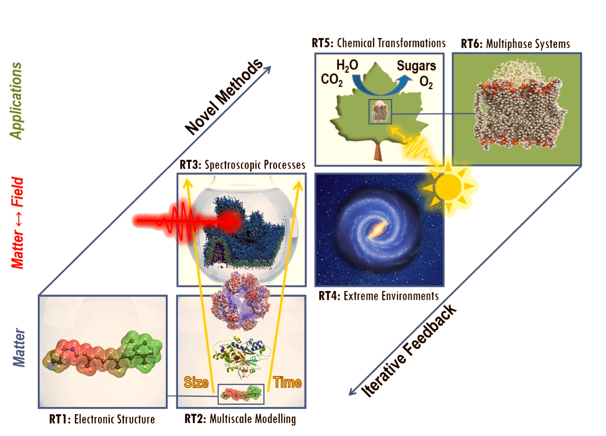

What does it feel like to touch an orbital?
this presentation: https://audunsh.github.io/evince-presentation/
Audun Skau Hansen, Simen Reine, Tilmann Bodenstein, Morten Ledum and Bin Gao
"Kan man ta på en orbital?"
("Can you touch an orbital?")
Blog-post on the university pages, discussing the physical status of quantum states.https://www.mn.uio.no/kjemi/studier/utdanningsleder
What do we need from a visualization toolkit on the HSP?
What do we need from a visualization toolkit on the HSP?
What do we need from a visualization toolkit on the HSP?
What do we need from a visualization toolkit on the HSP?
If the sky was the limit?
A visualization tool with high quality 3D graphics , GPU-based performance , user friendly customizability , cross-platform portability and seamless interactivity.
THE BIG PICTURE
From Facebook to
About 23% of Meta's workforce is focused on VR and AR technologies.
NVIDIA's Omniverse
"multi-GPU real-time reference development platform for 3D simulation and design collaboration"
Tools for the next-generation internet


Project Jupyter
"By being a pure web application using HTML, Javascript, and CSS, the Notebook can get all the web technology improvement for free."
Jupyter Widgets

from https://ipywidgets.readthedocs.io/en/stable/examples/Widget%20Basics.html
Meet Evince
A jupyter widget for the HSP
"high quality graphics and cross-platform portability"Customizability and extendability?
No problem, but this is where we leave the slides and visit the Evince project pages.